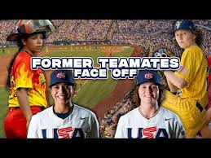

The Firefighters
The Firefighters are the third team to join the Banana Ball World Tour, making their debut in May 2024. Owned and operated by Fans First Entertainment, this team was created specifically to honor firefighters and first responders, integrating this theme into their branding, on-field actions, and community engagement. Their presence adds a layer of heroism and respect to the entertaining world of Banana Ball.

Authenticity and On-Field Tributes
Authenticity is at the core of the Firefighters' identity. The team is proudly led by Head Coach Valerie Perez, a Corpus Christi firefighter and a two-time gold medalist with the USA Women's National Baseball Team. The roster includes players who are current or former firefighters, like Mat Wolf, who transitioned from playing with the Bananas. On the field, players honor the fire service with themed celebrations, including the use of ladders, and by performing the "Firefighter Salute" to recognize first responders in the crowd.

The team's distinctive uniform and branding, designed by Dan Simon (who also created the Savannah Bananas' identity), prominently feature yellow accents, evoking the reflective gear worn by firefighters. For the players, wearing this jersey is a profound honor, representing the courage and sacrifice of first responders.
Debut and World Tour Appearances
The Firefighters made their anticipated debut in May 2024 against the Savannah Bananas at Grayson Stadium in Savannah. They quickly secured their first win and have since become a formidable opponent for the Bananas, Party Animals, and Texas Tailgaters on the Banana Ball World Tour. Their tour schedule has taken them to prestigious venues, including Major League stadiums like Nationals Park, Camden Yards, and Coors Field, where they have played in front of large, enthusiastic crowds.
Competitive Play and Impact
While the Firefighters incorporate plenty of showmanship, they are also serious competitors in Banana Ball, fielding talented players with professional and collegiate experience. They have participated in thrilling matchups, including games decided by "showdowns," adding to the excitement of the tour. Beyond the competition and entertainment, their primary mission remains honoring the fire service. This heartfelt tribute has deeply resonated with fans, especially younger generations who see firefighters as true heroes.